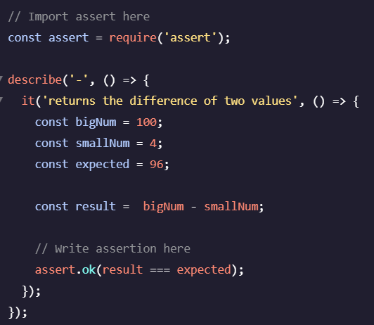
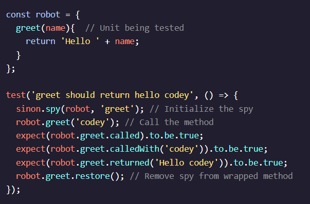

|
Why Test? |
In 2002, a study commissioned by the US Department of Commerce’s National Institute of Standards and Technology concluded that software errors cost the US economy about $59 billion annually. To avoid those costs, software professionals use automated testing. During and after production, they can run an automated test suite to give themselves confidence that their products are free of errors and work as expected.
The process for testing is as follows: write code changes, make pull request, run test(s), fix code, repeat until test passes, merge the pull request.
The characteristics of a good test: fast, complete, reliable, isolated, maintainable, and expressive.
|
|
Manual Testing |
Software testing is the process of assessing the completeness and quality of computer software. Usually this is done by running a part of a system (like a web application) and comparing the actual behavior to the expected behavior. Manual testing is a form of testing done by a human interacting with a system. With web apps, this might be clicking, dragging, and typing through a webpage. A list of actions and expected behaviors would be given. If the observed behavior doesn’t match the expected behavior, the application has an error. |
|
Automated Testing |
The cost of testing can be reduced and the quality can be improved with automated testing. Automated testing is the use of software to control the execution of tests and the comparison of actual behavior to expected behavior. Automated testing is faster, more accurate, and more maintainable. |
|
The Test Suite |
Tests are written with code, just like the rest of your web app. You can refer to the code defining your app as implementation code, and the code defining your tests as test code. If implementation code is written in index.js then the corresponding test code may be written in index-test.js. A collection of tests for a web application is called a test suite. |
|
Tests As Documentation |
Documentation is any content separate from implementation code that explains how it works or how to use it. Documentation can come in many forms, including plain text, diagrams…and tests! Tests as documentation provide what many other forms cannot: both human-readable text to describe the application and machine-executable code to confirm the app works as described. |
|
Regression |
When adding a new feature to your product, it’s possible that something will break. If that break occurs within a feature developed earlier, it is called regression. |
|
Testing Types |
At different stages of production for a particular project, you may encounter the opportunity for different types of tests, which can vary in scale and resource intensity, as well as serve different purposes.
- Unit Tests: covers the smallest possible unit of testable code, such as a single function. In order to keep the scope of a unit test focused on the unit being tested, any data or behavior from other units or external sources that the unit relies on should be replaced with fake (mock) data or behavior.
- Integration Tests: covers how the units of a particular program work with one another. When testing integrations with external services, only the handling of incoming data is tested while the data itself remains mocked.
- End to End Tests: (sometimes referred to as a UI layer test or e2e) automates user flow to test the application in the way that a real user would experience it. To closely match the end user’s experience, this type of testing would also test interactions with external services such as databases and APIs. In this test, the actual database and external API is used.
|
|
Testing Methodologies |
Some software testing methodologies prioritize writing test cases before writing the code those test cases will validate. Those types include:
- Test-driven Development (TDD): a methodology that flips the order, where tests are written before the functioning code is written. TDD tests look at the components of code, like functions and classes, as the smallest unit to test. In practice, TDD can accelerate software development since it dictates short development cycles with direct test cases.
- Behavior-driven Development (BDD): also involves writing test before code. BDD differs from TDD in why or when tests are written, what an individual unit is considered to be, and how the language of the test is composed (BDD is more specific). Since BDD tests are driven by behavior, the language of the test cases are simplified and written via collaboration between engineers, product owners, and other stakeholders, to ensure the specified behaviors make sense from a user perspective. Changes to the code base, such as changing the design of the code, will not occur unless there is a relevant change in the product. Since those changes are feature-related, the unit of tests is called a “feature.” Test cases are related to whether or not the feature works, rather than if the individual functions or classes you are writing to develop features work.
- Specification by Example (SBE):
- Acceptance Test-driven Development (ATDD):
|
|
Installing Mocha |
Developers use test frameworks to organize and automate tests that provide useful feedback when errors occur.
- Node allows you to run JavaScript in the terminal
- npm is a Node tool that allows you to download packages from the web, and manage them in a JavaScript project
- Mocha is one of those packages and is used to test other JavaScript code
|
|
npm init |
In Git Bash, this command creates a file package.json that can be used to manage packages for the project. After running this command you will be prompted to enter information about your project. It’s okay to skip some fields if you’re not ready to enter that information. |
|
$ npm install mocha -D |
With your project setup, you can install packages. Here’s what this command means:
- npm install tells npm to install a package from the internet and any other packages it depends on
- mocha is the package you want to download
- -D signifies that this package is a development dependency and will show up under the devDependecies section in package.json. This means that the package will only be included in development mode and will not be included in the production bundle.
Once you npm install packages, you can find the packages and all their dependencies in the node_modules folder. The new directory structure contains the following:
project
|_ node_modules
|___ .bin
|___ mocha
|___ ...
|_ package.json
|
|
Running Mocha |
The first (and more tedious) method is to call it directly from node_modules:
$ ./node_modules/mocha/bin/mocha
The second (and recommended) method is to add a script to package.json. In the scripts object in package.json, set the value of "test" to mocha. It should look like this:
"scripts": {
"test": "mocha"
}
Now you can call Mocha with the following command: $ npm test. Instead of manually running each test in the test directory, you can use this command to run the full test suite automatically.
|
 |
describe and it blocks |
In Mocha we group tests using the describe function and define tests using the it function. These two functions can be used to make your test suite complete, maintainable, and expressive in the following ways:
- Structure your test suite: you can organize tests into nested groups that reflect the structure of your implementation code.
- Provide informative messages: you can define your tests using human-readable strings.
Both the describe and it functions accept two parameters: a descriptive string and a callback function. Though the functions are flexible, they are commonly used in the structure above: nest describe blocks to resemble the structure of your implementation code and write individual tests in it blocks.
|
|
Testing Phases |
The phases of a test are defined as follows:
- Setup: create objects, variables, and set conditions that your test depends on
- Execute: execute the functionality you are testing
- Verify: check your expectations against the result of the exercise phase. You can use the assert library here
- Teardown: adding a teardown step to the end of a test resets the environment before the next test runs. This prevents changes to the environment from one test affecting the environment for the next test.
While execution and verification are unique to each test, setup and teardown are often similar or even identical for multiple tests within a test suite.
|
|
Teardown |
In most situations, we will need to write many tests for a particular feature that get executed in succession. Running multiple tests can introduce issues if the tests make changes to the testing environment: changes to the environment in one test might affect the next test. Some common changes to an environment include:
- altering files and directory structure
- changing read and write permissions on a file
- editing records in a database
To address this issue, we often add a teardown step to the end of our tests (e.g. the it function). The teardown phase makes our tests isolated by resetting the environment before the next test runs.
|
|
fs.appendFileSync(path, str) |
In the Git Bash terminal, this creates a new file at path with the string str as content. If a file at path exists, the string str will be appended to the end. |
|
fs.readFileSync(path) |
Returns the contents of the file found at path. |
describe...
let testValue;
beforeEach(() => {
testValue = 5;
});
it...
|
Hooks |
The Mocha test framework provides functions that enable us to reduce repetition, simplify the scope of each test, and more finely control the execution of our tests.
- beforeEach(callback) callback is run before each test
- afterEach(callback) callback is run after each test
- before(callback) callback is run before the first test (useful for separating out the setup steps of your tests)
- after(callback) callback is run after the last test (useful for separating out the teardown steps of your tests.)
|
|
Expressive Testing |
An expressive test is easy to read and descriptive. One way to make a test more expressive is clarifying its verify phase — the step where expected outcome is compared to actual outcome. Node.js provides a library called assert with methods that help you write more expressive verification code. You can use the methods in this library in place of conditional statements to write less code and use human-readable language. It can be used within the Mocha testing framework. |
|
const assert = require('assert'); |
As a Node module, this function can import assert at the top of your JS files. |
| 
|
assert.ok() |
To write the tests themselves (specifically the verify phase), we can use the assert.ok() method provided by Node.js. assert.ok() allows you to compare values and throw errors as needed using one function call.
You call assert functions in an it block like this: assert.ok(a === 3); If an argument passed to assert.ok() evaluates to false, an AssertionError is thrown. The error communicates to Mocha that a test has failed, and Mocha logs the error message to the console.
In the example, it is common practice to pass result first and expected second.
Functions in the assert library
chai.js assertion library
|
assert.ok(5 == '5');
assert.equal(5, '5'); //OK
|
assert.equal() |
Performs a == (loose equality) comparison. The examples each produce the same result. The second line is more expressive: instead of parsing the entire statement, a reader only needs to read the first two words to know the test is verifying equality! |
| assert.strictEqual(5, 5); //OK |
assert.strictEqual() |
Performs a === (strict equality) comparison. July 2021 Update: the assert documentation recommends always using assert.strictEqual() instead of assert.equal(). |
const a = {number: 5};
const b = {number: 5};
assert.deepEqual(a,b); //OK
|
assert.deepEqual() |
Performs a == (loose equality) comparison of the values within two objects. Arrays are also objects, so deepEqual() also compares their values with loose equality. Different objects with identicle properties are not considered equal when using either loose or strict equality in JavaScript. |
assert.notStrictEqual(1, 2); //OK
assert.notStrictEqual(1, '1'); //OK
|
assert.notStrictEqual() |
Performs a !=== (strict inequality) comparison. |
| assert.throws(() => {}, expected); |
assert.throws() |
Indicates whether a function returns a specific error (expected). The first parameter is an anonymous function, and the second parameter is the expected error. |
Write test code that fails
Write implementation code so the test passes
Consider refactoring the code
|
The Red-Green-Refactor Cycle |
One of the driving forces of TDD is the red-green-refactor cycle. “Red” and “green” correspond to the color of the text that our test framework produces in the terminal while running the tests in our suite. Red signifies failing tests and green corresponds to passing tests.
- Red: write tests that describe the intended behavior of implementation code (describe and it block), and then compare developer expectations with the actual results of implementation code (assert statement). The tests should always fail at first because the implementation code for the desired behavior will be written in response to the failing test.
- Green: write just enough implementation code to make the test pass. The tests return green because the implementation code executes the intended behavior described by the test in the red phase.
- Refactor: clean up and optimize code following the characteristics of a good test (add setup, execute, verify, teardown). Refactoring involves actively considering test and implementation code and making revisions to the code base. The tests are passing and should continue to pass throughout this phase of the cycle.
|
|
Edge Case |
An edge case is a problem or situation that occurs only at an extreme (maximum or minimum) operating parameter — you can think of these as special cases that you need to account for (number instead of string). |
|
Code Coverage |
The metric that measures the percentage of how many lines of code have been tested. For example, if 90% of our code has been executed in our tests, then we would say that we have “90% code coverage”. Some key criteria to use when measuring code coverage include:
- Function Coverage: Has each function been called?
- Statement Coverage: Has each statement been executed? (e.g. return)
- Path Coverage: Has every edge in the control-flow graph been executed? (e.g. if, else)
- Condition Coverage: Has each boolean sub-expression evaluated to be both true and false?
Having 100% code coverage does not guarantee bug-free code – it simply validates the completeness of our tests using a given set of criteria relative to other test suites with lower code coverage.
|
|
Test Coverage |
Test coverage differs from code coverage in that test coverage measures the percentage of the required features/specs that are tested, as opposed to the percentage of lines executed. These features/specs are typically defined in a requirements document provided by a client or product designer. |
|
Mocking in Tests |
Mocking is the process of creating a fake version of an external service for testing purposes, particularly in unit tests and integration tests. Mocking is effective in testing individual units of code without relying on the functionality of other services or units such as APIs or databases. By removing dependencies, we are limiting the sources of potential bugs and unintended results to just the feature being tested. This is also known as stubbing. While it’s helpful to use mocks in unit tests, we should avoid using mocks in integration tests to better simulate interactions between internal services (though external services should remain mocked). |
|
Sinon.js |
A JavaScript library that includes standalone fakes, spies, and mocks that can be used in any unit testing framework. Sinon.js spies documentation |
|
Spy |
A function that observes and records information about another function’s calls including arguments, return value, the this value, and exceptions thrown (if any). The information that is observed by the spy can then be used in assertions for testing. |
|  |
How to Spy |
Many ways including anonymous functions and wrapping around a method. The sinon.spy() method is used to wrap the method in the example. To ensure that the method returns to its original, un-spied-on state, we use the .restore() method. |